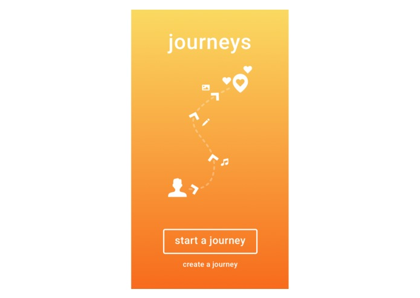
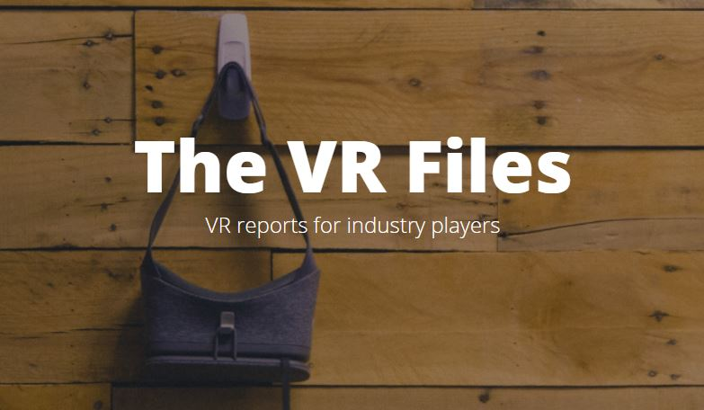
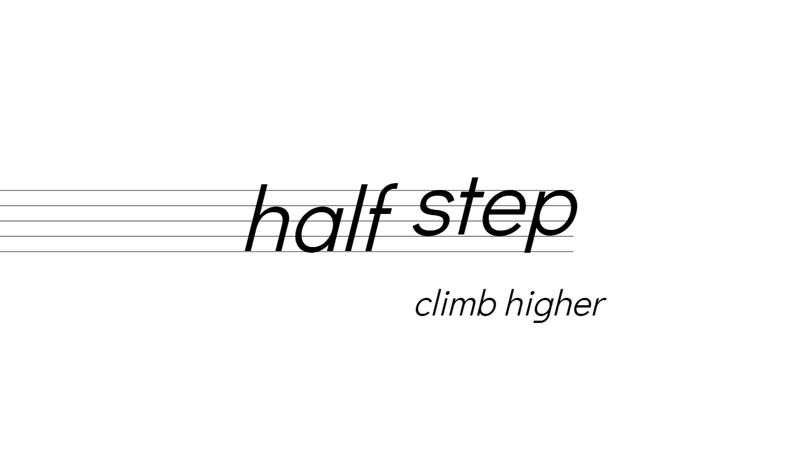

Kingdom Watcher
Kingdom Watcher is the ultimate blend of tower defense and bow and arrow shooter. Inspired by Valve's The Lab - Longbow, players must defend their castle from the onslaught of the Troll King's army. Players can build and upgrade towers like a traditional TD game, but are also equipped with their own bow and arrow to take out enemies. I designed and built Kingdom Watcher from the ground up with minimal engineering support from Subdream Studios. All the art assets were done by Kanji Fukuta of Subdream Studios. Built with Unity - C#. Kingdom Watcher is available on GearVR and has been played over 9000 times.
More on Kingdom Watcher here: Kingdom Watcher Page
Journeys

We want people to share and experience real world journeys. Humans are spatial creatures, yet more and more of our lives are lived out from our seats and over the internet. It's time to bring people back to exploring and experiencing reality. But that doesn't mean we have to move away from the digital world. We believe we can achieve this by combining digital and physical stories for an augmented life experience. Journeys is a mobile AR app that guides users through other users' journeys by showing them AR directions to real-world waypoints. Once there, users can experience the waypoint and see photos, text, and audio. Won Intel Vaunt's choice award at Creating Reality Hackathon. Demo video
More on Journeys here: Journeys Devpost
Snowbird
Snowbird is the first immersive film for ARKit enabled devices. The viewer places a snowglobe in their world and watches an animated short in augmented reality, exploring different angles and getting up close and personal with the characters. Built with Unity - C#. Available now.
More by Dandelion Studios .
Download Snowbird here: Snowbird App Store
Charleston Reconstructed

Recently awarded the Magic Grant from the Brown Institute for Media Innovation to build: Charleston Reconstructed . We are using AR to reimagine how public spaces would look in a more inclusive time period. Focused on Charleston, South Carolina, our project will provide diverse, provocative perspectives on Charleston's public spaces containing Confederate-era monuments. Development begins in September 2018.
Luminosity
Luminosity is a reverse-stealth and puzzle game built for Stanford's Intro to Game Design class. I made the light spirit character, designed levels, and designed and developed the camera code. Built in 5 weeks with Unity - C#. Won Student's Choice Award from Stanford Video Game Association.
SocialQ
SocialQ is an assistive technology that helps children affected by ASD (Autism-Spectrum Disorder) to better recognize facial expressions and social cues. SocialQ utilizes Microsoft's Augmented Reality Headset HoloLens to provide real-time and real-world assistance and training. There are two interfaces: a learning interface, where the user can ask the app what certain expressions look like, and an assistance interface, where the user can figure out what the other person's expressions reveal about their emotions. Built using Microsoft Emotion API, Windows Speech Recognition, and Unity SDK for HoloLens. Won Best Use of Microsoft Technology at UC Berkeley's Hackathon: CalHacks 3.0. Also a U.S Microsoft Imagine Cup National Finalist. All demo footage is shot live through the HoloLens.
The VR Files

The VR Files is a platform I created to make information about virtual reality more accessible. Focused on industry applications of VR, The VR Files sources and curates research papers that validate use-cases of virtual reality.
The VR Files is live here: The VR Files
Co-founder and CEO of Lunasphere
Lunasphere is a platform for the next generation of informational content about real world objects. Currently, the Triton Museum of Art in Santa Clara uses Lunasphere to publish multimedia content, which its patrons can access through QR Code or through an exhibit look up. I built Lunasphere from the ground up using Angular and JQuery for the front-end, and AngularFire, Firebase, and Javascript for the backend.
Lunasphere is live on mobile devices here: Triton Museum
half step website
